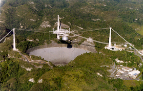

Radio astronomy is the branch of astronomy that makes use of observations at radio wavelengths in the electromagnetic spectrum. Radio astronomy complements observations at other wavelengths to get a complete understanding of a particular object. Many famous radio telescopes or arrays have been involved in the discovery of objects such as pulsars, quasars and gravitational lenses.
Many atoms only emit light at radio wavelengths while thermal radiation from gas, pulsars and quasars are often easiest to observe at radio wavelengths. The observations of the cosmic microwave background with the COBE and WMAP satellites have been of tremendous significance in our understanding of the origin and evolution of the Universe.
As the resolution, θ of a telescope depends on the wavelength, λ and the dish diameter, D, such that θ ~ 1.22λ/D, the size of a radio dish must be very large to achieve a fine resolution. Alternatively, an array of smaller dishes separated by hundreds, or even thousands of metres, can be used to synthesize a larger telescope, and produce high resolution radio images (such as the VLA).
The highest resolution radio images are achieved by using pairs of antenna separated by hundreds of kms which are used to observe the same source simultaneously – the data is later passed through a correlator which produces images of the source. This is known as very long baseline interferometry or VLBI.

Credit: Courtesy of the NAIC - Arecibo Observatory, a facility of the NSF